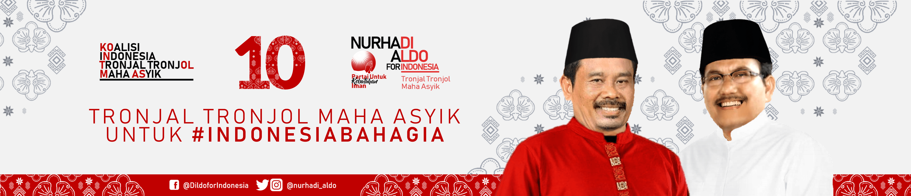

Beranda
Quotes
Program Kerja
Berita
Profil Capres No. 10
Nurhadi-Aldo
Nurhadi
adalah seorang pemijat professional yang berasal dari kudus.
Aldo
saya tidak tahu
No. 10 ini hanya diusung oleh satu partai saja.
Yaitu PARTAI UNTUK KEBUTUHAN IMAN.
Partai ini adalah salah satu penyumbang KORUPTOR di INDONESIA haha:v

© Muhammad Rafly Amartharizqi - X RPL 4 - 24 - Rekayasa Perangkat Lunak - SMK Telkom Malang